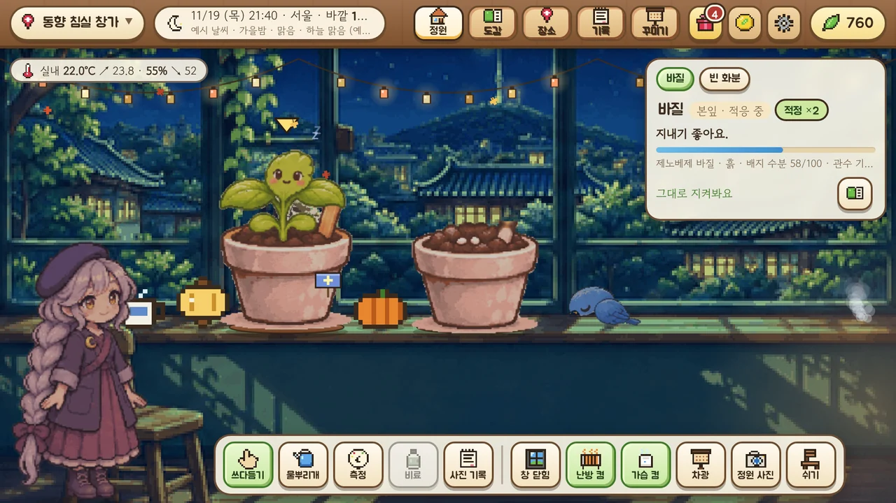
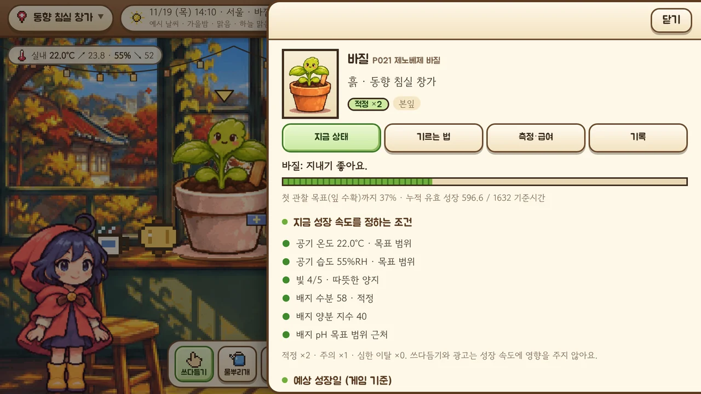
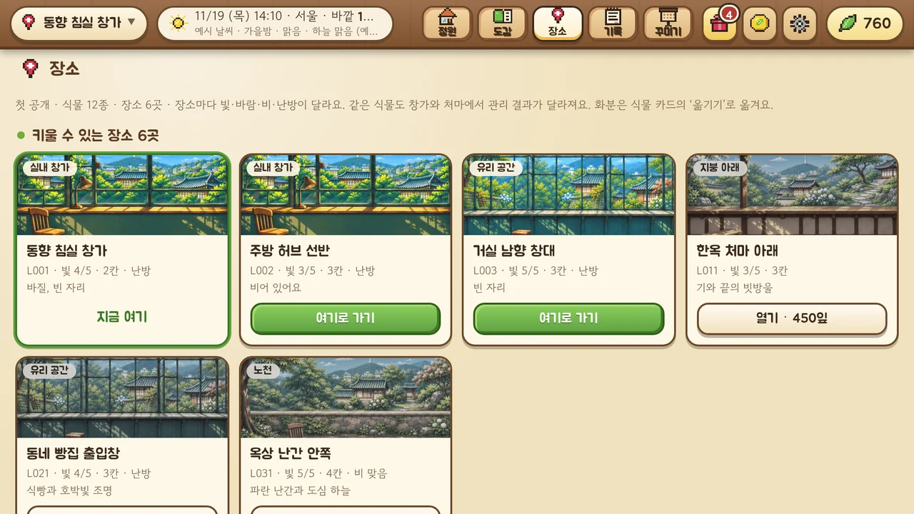
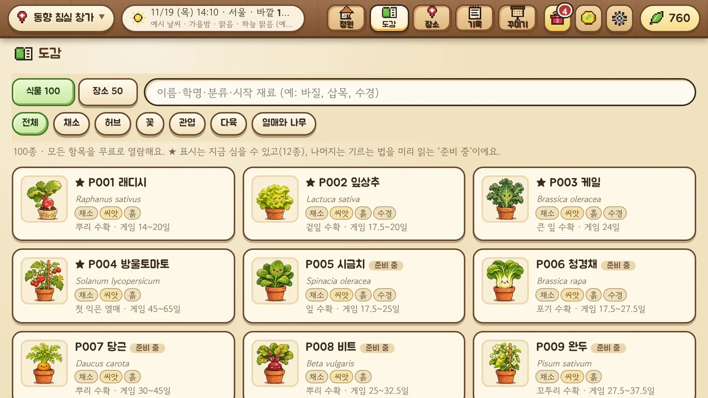
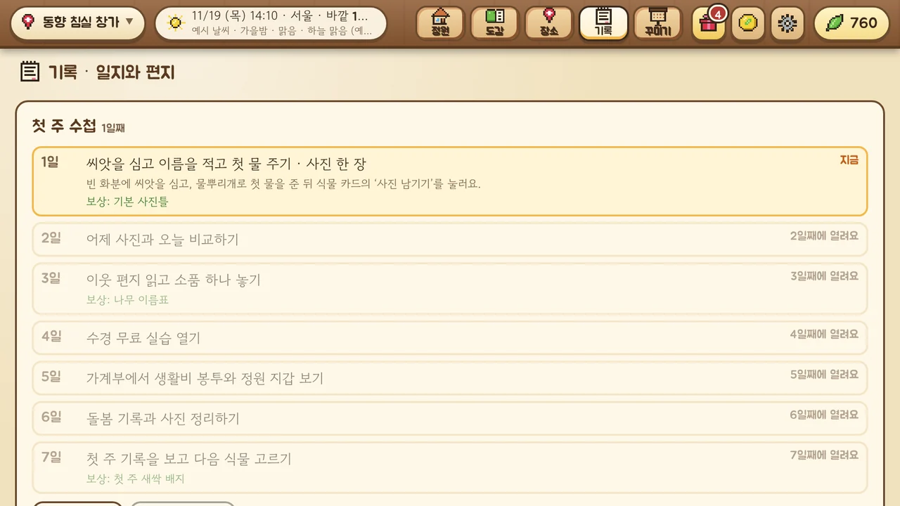

이런 게임이에요

실제 시간으로 자라는 식물
흙이 마르면 물을, 추우면 창문을 닫고 난방을. 오래 비워 둬도 식물이 영영 시들지는 않아요.

낮과 밤, 비와 눈
창밖은 시간 따라 낮·노을·밤으로 바뀌고, 날씨도 달라져요.

꼼꼼한 돌보기
온도·습도·빛·흙 수분을 보고 무엇이 필요한지 알려 줘요.

장소마다 다른 정원
침실 창가, 허브 선반, 처마 아래, 옥상 난간… 빛과 바람이 달라요.

식물 도감 100종
기르는 법을 모두 무료로 읽을 수 있어요. 지금은 12종을 키울 수 있어요.

첫 주 수첩과 이웃 편지
날마다 작은 정원 일을 하고, 빵집 이웃의 편지를 받아요. 정원 사진은 배경화면으로도.
광고 안내
광고는 보고 싶을 때만 누르는 보상형 광고뿐이에요(잎·꾸미기 소품·주인공 7일). 갑자기 뜨는 광고나 배너는 없고, 광고를 보지 않아도 돌봄·회복·장소 열기는 모두 할 수 있어요. 광고로 식물이 빨리 자라지는 않아요. 게임 기록은 기기 안에만 저장돼요. 자세한 내용은 개인정보처리방침을 봐 주세요.
만든 사람
푸렁이(대현)
기획 · 제작